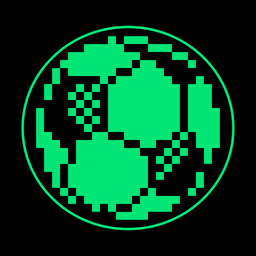
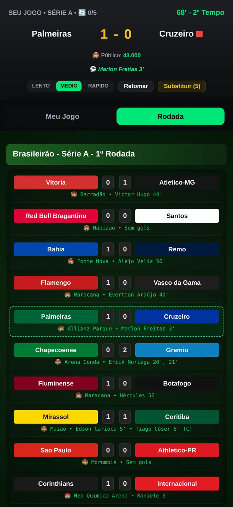
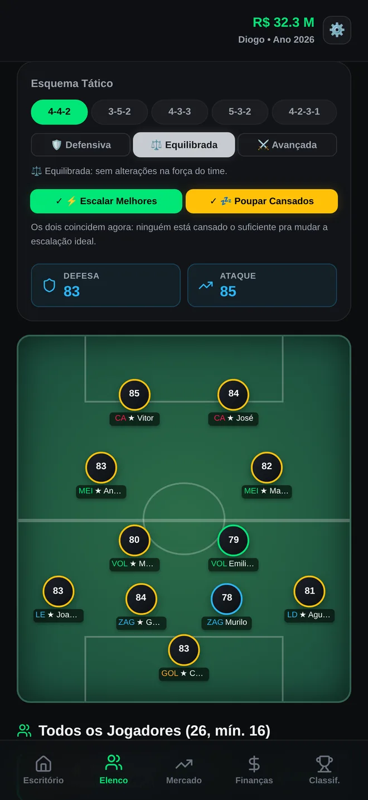
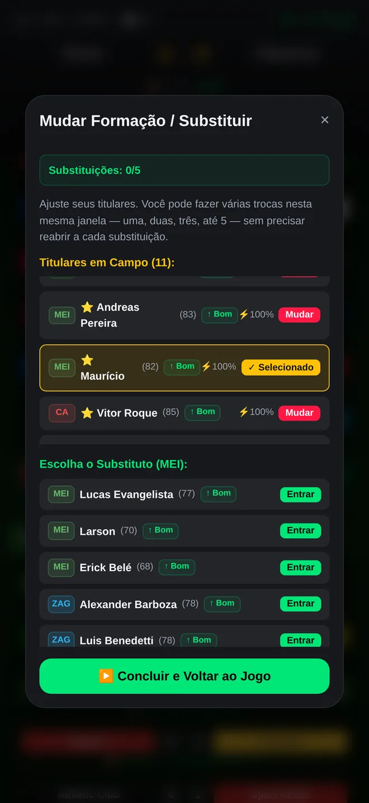
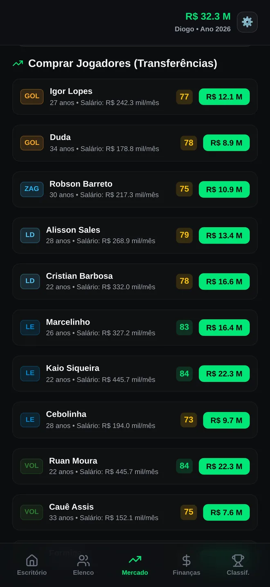
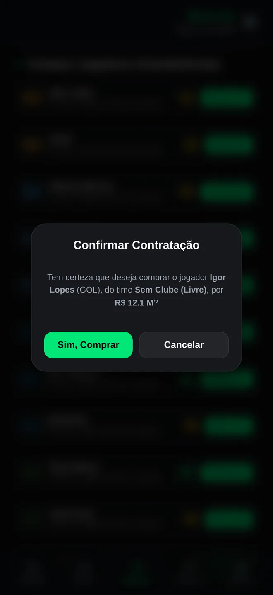
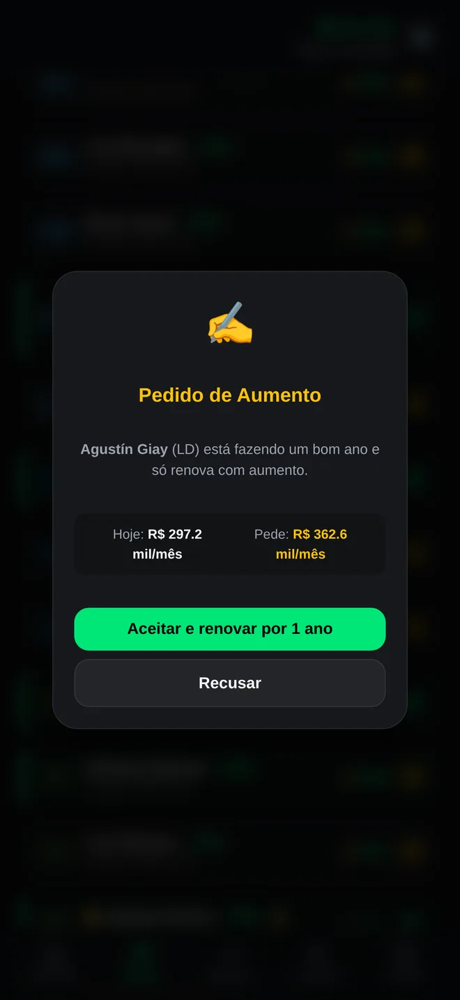
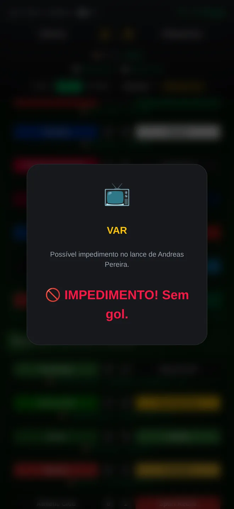
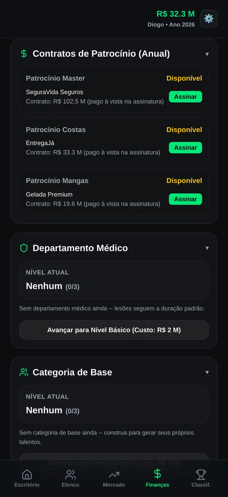

Você no comando do clube.
Monte o elenco, escale o time, negocie contratos e acompanhe cada lance ao vivo. Do terceiro escalão até o título mundial.
Grátis para jogar


Escalar o time na véspera do clássico, torcer pelo resultado ao vivo e brigar pelo acesso rodada após rodada. O GOLAÇO traz de volta aquele jeito simples e viciante de ser treinador, agora no seu celular.
Cada escolha muda o rumo da temporada.
Acompanhe gols, cartões e lesões minuto a minuto, com o placar dos outros jogos da rodada.
Lances revisados pelo VAR, cobranças de pênalti e decisões que você toma no calor da partida.
Escolha o esquema, a postura do time e faça até 5 trocas durante o jogo.
Contrate, venda e negocie com os outros clubes. Encontre o reforço que falta no elenco.
Jogadores pedem aumento, ficam insatisfeitos e podem sair de graça se você não renovar.
Feche patrocínios, cuide do caixa e invista em Departamento Médico e Categoria de Base.
Telas reais do GOLAÇO Manager.






Uma compra única, sem assinatura.